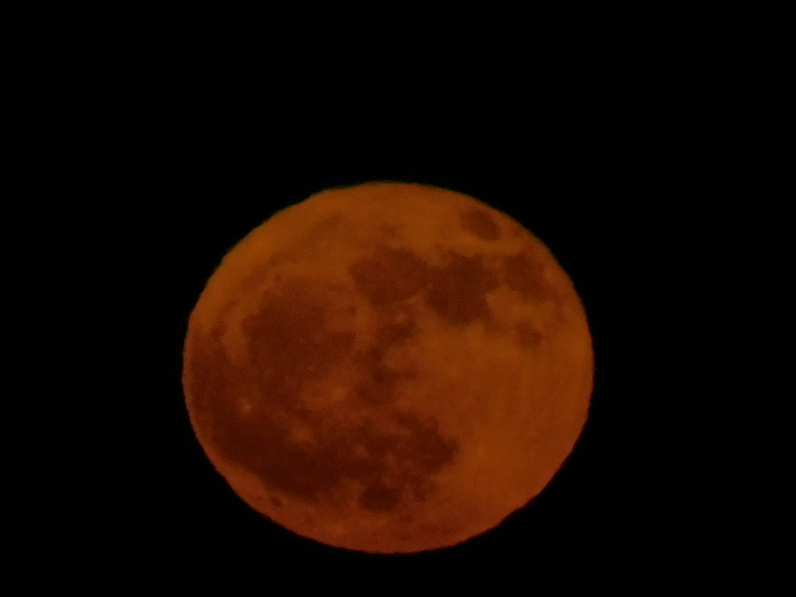
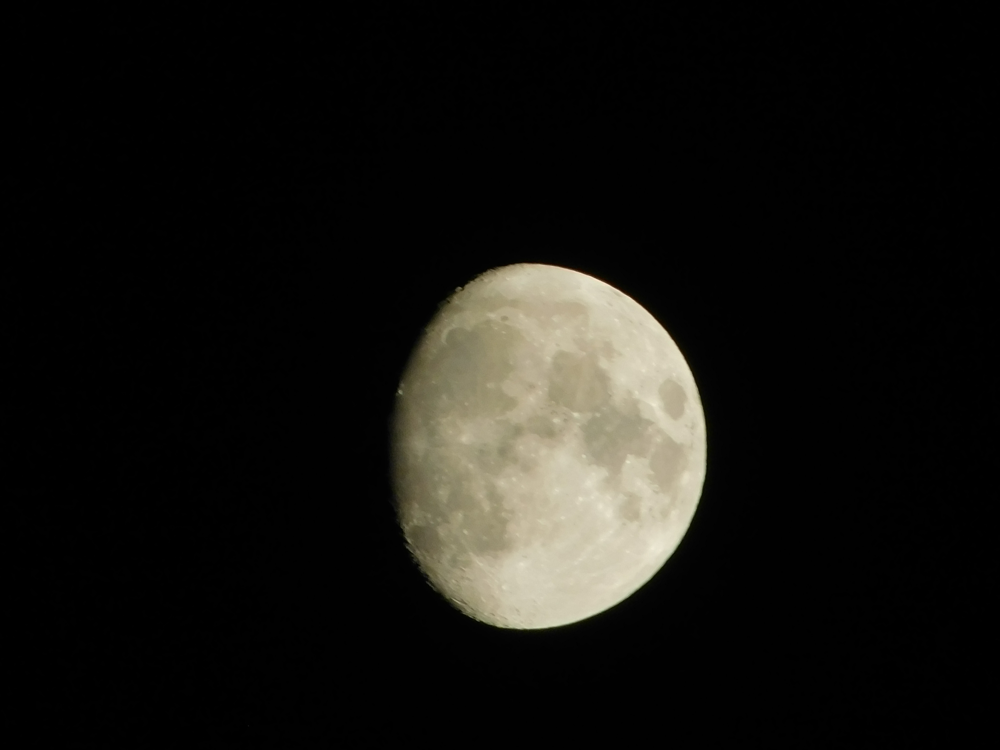
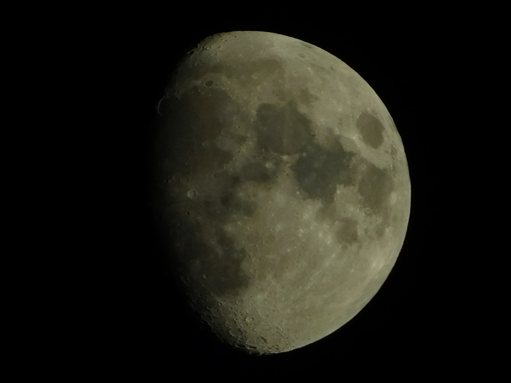
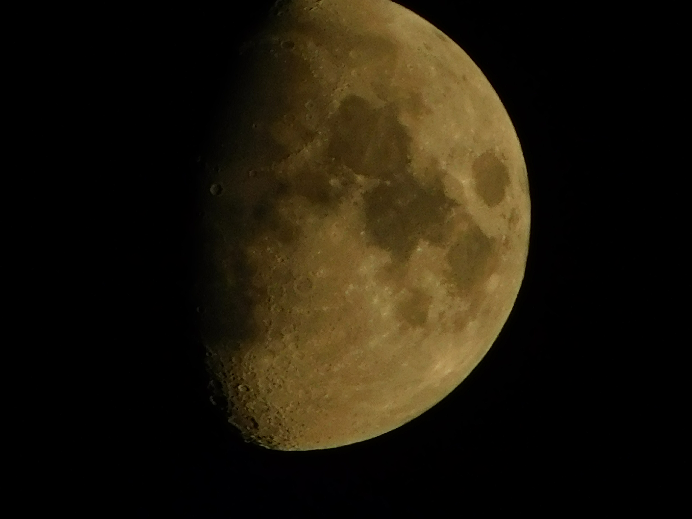

<!DOCTYPE html>
<html lang="en" style="background-image: url(page_assets/moon-bg.gif);">
  <head>
    <title>Moon</title>
    <meta name="viewport" content="width=device-width, initial-scale=1.0">
    <meta charset="UTF-8">
    <link rel="stylesheet" href="moonstyle.css">
  </head>
</html>

<body>
  <audio autoplay loop><source src="audios/moon.mp3"></audio>
  <div id="header">
    <h1>Moon</h1>
    <div id="intro">
    <p> This is my documentation of the moon and its phases.<br> All photos were
        taken courtesy of the <br><b style="color: red;">CoolPix B550</b><br> An amazing gift from Nicole on my birthday.<br>Thank you -- I love you.</p>
    </div>
  </div>
  <div class="content">
    
    <p><h2>July 10th, 2025</h2><h3>Phase: Waxing Gibbous<br>Illumination: 100% (Full Moon) </h3>
    The moon was completely full and red as the sunset in the sky in Palos Verdes.<br>
    I fear for the day the moon will no longer exist.<br> </p>
  </div>
  <div class="content">
    
    <p><h2>July 6th, 2025</h2><h3>Phase: Waxing Gibbous<br>Illumination: 84%</h3>The moon was visible in the late afternoon sky.<br>We are nearing a full moon, I'm excited to see it.<br>Picnics at the the El Dorado Nature Center are the <b>best</b>.<br></p>
  </div>
  <div class="content">
    
    <p><h2>July 5th, 2025</h2><h3>Phase: Waxing Gibbous<br>Illumination: 74%</h3>The moon is 11% brighter.<br>
        Sometimes when I look at the moon, I imagine myself there.<br> Away from all my worries and troubles. <br>
        The moon landing was definitely fake.<br>There is no way someone actually step foot on that thing.
    </p>
  </div>
  <div class="content">
    
    <p><h2>July 4th, 2025</h2><h3>Phase: Waxing Gibbous<br>Illumination: 66%</h3>Who would've known the moon would be so beautiful from afar.<br>
       I cannot believe I am living this right now.<br> Sometimes I wonder what the moon will look like
        when I die.
    </p>
  </div>
  <a href="index.html"></a>
</body>